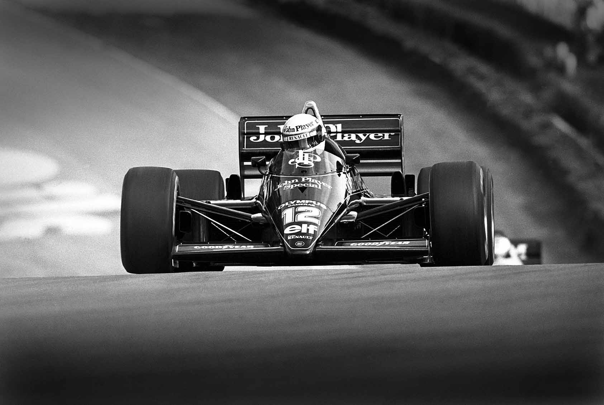

Ayrton Senna
A legend of motorsports and a unique human being

Senna driving the Lotus 98 T in 1986.
Below a list with a short story of his career
- 1960 -Born in Sào Paulo(Brazil).
- 1977-Senna won the South American Kart Championship.
- 1981-Senna moved to England to begin single-seater racing, winning the RAC and Townsend-Thoreson Formula Ford 1600 Championships.
- 1984-Senna made his debut at the 1984 Brazilian Grand Prix in Rio de Janeiro, where he qualified 17th, but retired when the Hart 415T turbocharger failed on lap 8.
- 1985-Senna was partnered in his first year at Lotus-Renault by Italian driver Elio de Angelis.At the second round of the season, the Portuguese Grand Prix, Senna took the first pole position of his Formula 1 career. He converted it into his first victory in the race.
- 1988-Senna joined the McLaren team.
- 1991-Senna became the youngest ever three-time world champion, taking seven wins and increasing his pole position record to 60 from 127 events.
- 1994-Senna joined the team Williams.The first race of the season was at Interlagos in Brazil, where Senna took pole position.
- 1994-Senna died aged 34 after succumbing to fatal injuries sustained during his race at the San Marino Grand Prix, on 1 May.
"Racing, competing, it's in my blood. It's part of me, it's part of my life; I have been doing it all my life and it stands out above everything else."
"I don't know driving in another way which isn't risky. Each one has to improve himself. Each driver has its limit. My limit is a little bit further than other's."
"Of course there are moments that you wonder how long you should be doing it because there are other aspects which are not nice, of this lifestyle. But I just love winning."